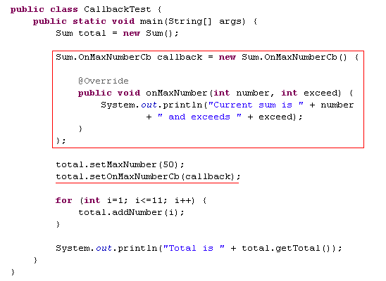
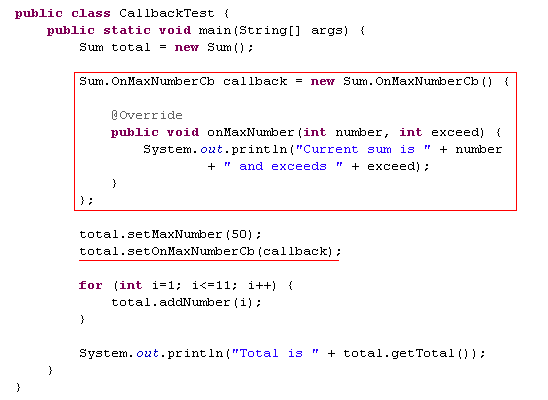
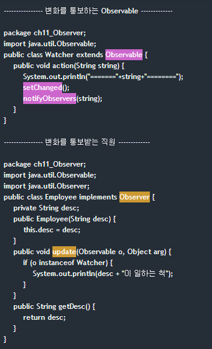

Callback과 Listener
Callback은 Listener과 비슷하다. Callback이나 Listener모두 이벤트 처리에 사용하기 때문이다.
하지만 정확히 이 두 가지는 디자인 패턴이 다르다. Callback은 Command Pattern을 따르고 Listener는 Observer Pattern을 따른다.
Interface를 사용하여 Callback 구현하기
일반적으로 프로그래밍에서 Callback이라는 용어는 다음과 같다.
일반적인 경우처럼 호출자가 피호출자를 호출하는게 아니라 피호출자가 호출자를 호출하는 것이다.
callback은 포인터나 핸들러를 피호출자에게 넘겨주는데 피호출자는 호출자의 포인터나 핸들로를 이용해 호출자를 호출한다. callback 기법은 재사용성이 높고, 비동기적으로 처리할 수 있으며, 함수를 추상화 할 수 있어 UI나 비동기 처리 시스템에서 많이 사용한다.
- 피호출자가 호출자를 다시 호출하기에 비동기적인 처리가 가능.
- Interface이기 때문에 추상화
- UI 에서 이벤트의 전달에 많이 사용 됨.
interface Callback 은 다음과 같이 사용한다.
피호출자의 클래스에 인터페이스를 만들고 클래스에서 인터페이스를 입력받는 메서드를 둔다. 안드로이드를 예를 들면 setOnClickListener() 이다.
그리고 피호출자의 클래스에서 인터페이스의 메서드를 수행하면 호출자가 인터페이스를 구현한 내용이 실행된다.
 

Observer Pattern
옵저버 패턴은 어떤 클래스의 변화를 다른 클래스에 통보해 주는 패턴이다.
자바 api에서 observer 패턴을 구현해놓은게 있는데 바로 Observable 클래스와 Observer 인터페이스 이다.
Observable 클래스를 상속받은 클래스는 변화를 통보하는 역할을 하고, Observer 인터페이스를 구현한 클래스는 변화를 통보받는 역할을 한다.
교실로 따지면 Observable 은 선생님 떴다고 알려주는 아이고, Observer는 그 통보를 받았을 때 공부하는 척 하는 아이다.
